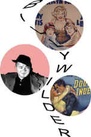

|

|
|
The Golden Bowl has been cited as an ISF Reference
DVD.
Click the ISF image for the complete list of ISF cited DVDs. |
CURRENT DVD REVIEWS |
| Love Me Tender/ C+, B+ |
| Flaming Star/ B, B |
| Charlotte Gray (SE)/ B+, A- |
| John Q. (SE)/ D+, A- |
| Say Anything (SE)/ B+, B |
| Man of the Century (SE)/ B+, A- |
| Collateral Damage (SE)/ C+, A- |
| S.O.B./ C+, B+ |
| Skin Deep/ C+, B |
| Two Family House/ B, B+ |
| Charlie's Angels (SE)/ C, B+ |
| Victor/Victoria (SE)/ A,B+ |
| Great Race, The/ B+, B+ |
| Lagaan/ C, C+ |
| Circus (SE)/ C+, A |
| To Gillian on Her 37th
Birthday/ B-, C+ |
| Audition (SE)/ A-,B |
| Kansas City Confidential/ B, C- |
| Amélie (SE)/ B+, A- |
| Big Heat, The/ B+, B+ |
| Fathom/ C+,C |
| Our Lady of the
Assassins/B+,B+ |
| Gosford Park (SE)/ A, A |
| Hombre/ B, B+ |
| Atlantic City/ A, A- |
| Monster's Ball (SE)/ B+, B+ |
| Majestic, The (SE)/ C+, A |
| Kate and Leopold (SE)/ B, B+ |
| A Beautiful Mind (SE)/ A-,A |
| Witness for the Prosecution/
B+, B |
| Memento (SE)/ A, A |
| Harry Potter and the
Sorcerer's Stone (SE)/ B+, A |
| Sorry, Wrong Number/ B, B |
| Key Largo/ A-, A- |
| Vanilla Sky (SE)/ C+, A |
| My First Mister (SE)/ B, B+ |
| Bite the Bullet/ B, C+ |
| Bob Le Flambeur (SE)/ A-, B |
| Black Knight (SE)/ C, A- |
| Vikings, The (SE)/ B, B |
| Ali/ B, A- |
| Gambler, The (1974)/ B+, B- |
| Fatal Attraction (SE)/ B+, B |
| It
Came From Outer Space (SE)/ B, B+ |
| Requiem for a Heavyweight/ B+,B+ |
| Calamity Jane/ A-, B+ |
| Barcelona (SE)/ A-, B |
| Cowboy/ B, C |
| Harvey Girls (SE)/ B+, B+ |
| Serendipity (SE)/ B, B+ |
| Texas Rangers/ C+, C+ |
| Dancing at the Blue Iguana (SE)/ C+, A- |
| Domestic Disturbance (SE)/ C, B+ |
| Bread and Tulips/ B+, B+ |
| Behind Enemy Lines (SE)/ B-, A |
| Metropolis (Anime) SE/ B, B |
| Accused, The/ B+, B+ |
| Projectionist, The/ C+, C+ |
| Tall Guy, The/ B+, B |
| Life on a String/ B+, D- |
| Mulholland Dr./ B+, B+ |
| Omaha (SE)/ C+, D |
| Life as a House (SE)/ B-,B |
| Spy Game (SE)/ B-,A |
| Sexy Beast (SE)/ B+, A- |
| Party, The/ B, C |
| Fresh (SE)/ A-, A- |
| Eat, Drink, Man, Woman/ B+, A- |
| K-Pax (SE)/ B+, A |
| Strictly Ballroom (SE)/ A-, B+ |
| Training Day (SE)/ B+, A (F) |
| Purple Noon/ B+, C+ |
|


Films on Disc has been sited by Classic Movies as one of their
Best New Links.

The editors of Britannica.com have selected Films on Disc as one of
the best on the Internet when reviewed for quality, accuracy of
content, presentation and usability.
© 2002 Films on
Disc
Stuart J. Kobak
ALL RIGHTS RESERVED. |
|
|
| |
| |
Films on
Disc Internet Magazine includes DVD reviews and DVD feature articles, plus
Film, Movie Poster and DVD Links.
Films on Disc
The Ultimate DVD Review Site
Front
Cover
April 2002
Last
Update
August 17, 2002
In this issue......
Wilder
Homage in Posters
By Stu Kobak

Billy Wilder left movie lovers a legacy of
cinematic treasure. From defining Film Noir to outrageous comedy,
writer/director Wilder delivered the goods with consummate style.
Thorough a Lens, Obliquely
By Stu Kobak
 Flicks about Hollywood make fascinating material, but the
establishment isn't always totally forthcoming. Click on the Hollywood
montage for a look at some of the best Hollywood films about the
movie-making business. Flicks about Hollywood make fascinating material, but the
establishment isn't always totally forthcoming. Click on the Hollywood
montage for a look at some of the best Hollywood films about the
movie-making business.

Click on the DVD MIA symbol for
profiles of DVDs missing in action.
Add films to the DVD MIA
Master List by filling out a simple form. Click Here |
|
|
|

Selections from the Feature Archive
include articles on Akira Kurosawa, Frank Darabont, Blonde Bimbos,
Hollywood Street Gangs, or Vietnam: The Hollywood Pariah, and many
more....

Want to compare the home run swing of Jack Elliot to former
Japanese Home Run King Daryl Spencer? Click on the baseball for Fastballs
in Japan.

Look
for these worthy new DVD releases.
Momento (6/4/02))
Now you can
revisit Memento in a special edition with commentary from director
Christopher Nolan. Will he reveal all the secrets? Coming from Columbia.
L.I.E. (6/4/02)
Interesting
independent feature has some devastating emotional moments . New Yorker
releases in rated and unrated versions.
Will Penny (6/4/02)
Lean 1968 western stars
Charlton Heston as a drifter cowboy. One of his finest performances. Tight
little movie. Paramount delivers the DVD.
Click on DVD Alerts for
more.


 Have
you visited Home Theater Talk
lately? One of the friendliest places on the Net for Home Theater and DVD
discussion, you can get help for installation problems or simply share
your opinions with other Vidiots. Have
you visited Home Theater Talk
lately? One of the friendliest places on the Net for Home Theater and DVD
discussion, you can get help for installation problems or simply share
your opinions with other Vidiots.

Mystery writer Fred Hunter digs into classic films on DVD. Check out his
insightful reviews at The Classics
on DVD. Check out his end of the year wrap with the best of picks and
pans in
2001 Year in Review.

Manufacturer of computer-video interfaces, switchers, distribution
amplifiers, computer-video scan converters, and high resolution cable.
Found in many high end home theater systems.

ISF Monitor Calibrations in the
Tristate New York area. Lots of hardware info and frequent hardware peaks
from video expert Kevin Miller. They may be judgmental, but that's the
point, isn't it. Lots of DVD reviews plus news and more
|
|